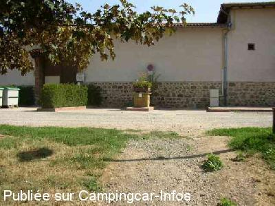

ASN = Aire de services avec stationnement nuit possible de :
PANISSIÈRES
(N° 599)
Accès/adresse :
Rue des Lauriers
42360 PANISSIÈRES
42360 PANISSIÈRES
Latitude : (Nord) 45.78818° Décimaux ou 45° 47′ 17′′
Longitude : (Est) 4.34479° Décimaux ou 4° 20′ 41′′
Tarif : Tarif 2010
5,80 € Stationnement services inclus
Type de borne : Autre
Services :


Bloc sanitaire
bac à linge, sèche-linge, douches, etc. Porte codée.
Tous commerces
Autres informations :
7 emplacements, sans ombre, ouverte toute l'année.
Tel : 04 77 28 69 68
http://panissieres.free.fr/panissieres/relais_camping_car.php

Le 23/09/2004 par montagnesdumatin
Le 23/09/2004 par montagnesdumatin

Le 23/09/2004 par montagnesdumatin
de
François 63
le 13/07/2010 :
Aire très difficile à trouver. Je n'ai vu aucune signalétique. Aire adossée à un bâtiment, sans beaucoup d'espace. Pas d'ombre, donc très chaud en été. Prix de la nuitée en 2010 = 5,80€. §
Aire très difficile à trouver. Je n'ai vu aucune signalétique. Aire adossée à un bâtiment, sans beaucoup d'espace. Pas d'ombre, donc très chaud en été. Prix de la nuitée en 2010 = 5,80€. §
de
Philippe Garnier
le 16/01/2006 :
Nouveaux tarifs pour 2006 votés par la municipalité de Panissières : bloc sanitaire : 2,60€, la nuitée : 4,70€.
Toutes les aires des montagnes du matin sur :
www.montagnesdumatin.com/guide-pratique/relais-camping-car.php
Nouveaux tarifs pour 2006 votés par la municipalité de Panissières : bloc sanitaire : 2,60€, la nuitée : 4,70€.
Toutes les aires des montagnes du matin sur :
www.montagnesdumatin.com/guide-pratique/relais-camping-car.php